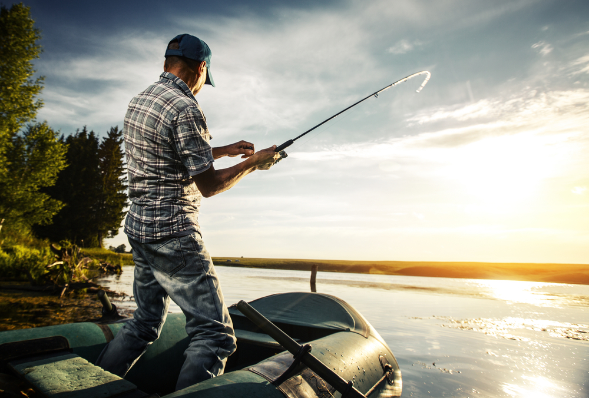
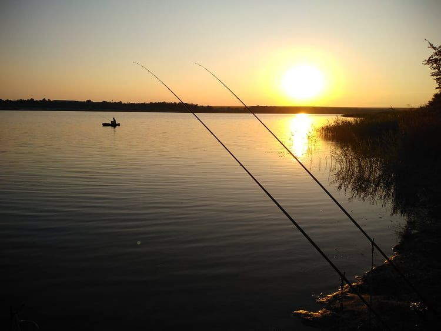
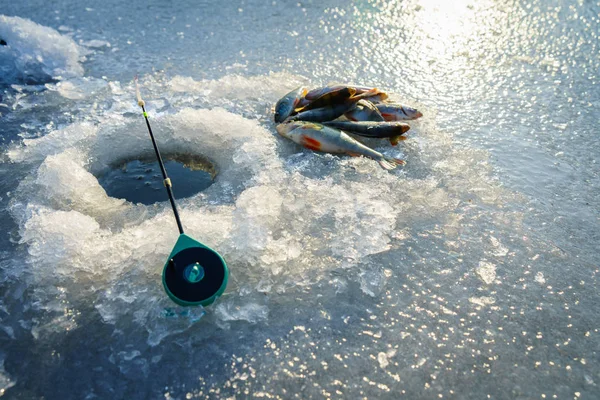

- Зимову (підлідну риболовлю або риболовлю з льоду).
- Літню – яка часто охоплює весняний, осінній і навіть частину зими.
Багато рибалок віддають перевагу лише одному з цих сезонів, адже снасті й підхід до лову зовсім різні.
Також риболовлю поділяють на прісноводну та морську. У нас переважає прісноводна ловля на річках і ставках.
Повна класифікація літньої риболовлі
Пасивна риболовля на мирну рибу:
- Поплавочна: болонське, махове, матчеве вудилище.
- Донна: коропові, фідерні снасті.
Активна риболовля
Активна риболовля — це спінінгова ловля хижої риби. Вона потребує руху, терпіння та вміння відчувати клювання.


Зимова риболовля
Підлідна риболовля дозволяє ловити будь-де на замерзлому водоймі. Головне — вибір місця для лунки! Важливо мати правильні снасті та одяг, адже рибалка на морозі потребує підготовки.
- Мормишка — ефективна для різних видів риби.
- Балансир — імітує малька, природно рухається у воді.
- Блешня — класика підлідного лову щуки чи окуня.
